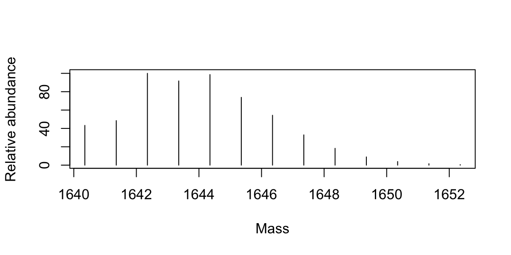

Chapter 10 Mass Spectrometry
Mass spectrometry experiments produce a vast amount of data that comes in various formats. Mass spectrometry data is composed of raw data (m/z peak data) from different types of proprietary instrument vendor formats, open-access formats, and data processing and interpretation workflow formats such as XML, CSV, tab delimited, and Excel.
To handle such a diverse set of data, researchers can rely on multiple R packages that help access, manipulate, and process the data. These packages are designed to perform tasks such as filtering, normalization, and quality control, which are essential to produce reliable results.
Furthermore, the ability to analyze and interpret mass spectrometry data is essential for many fields, including proteomics, metabolomics, and lipidomics. Researchers use mass spectrometry data to identify and quantify proteins, metabolites, and lipids in biological samples.
The field of mass spectrometry generates a considerable amount of data in various formats that require processing and interpretation. With the help of a slew of R packages, researchers can efficiently manage and analyze this data to provide accurate and reliable results.
 |
At the end of this chapter you should be able to
|
10.1 Commercial
Accessing mass spectrometry data has some barriers due to vendors proprietary file formats. In recent years, vendors have been providing software development kits (SDKs) that allow programmers to provide direct access to the raw data. This is essential when developing fundamental workflows that require such data and also can enable analysis tools to bypass sometimes time consuming file format conversions to open formats. There are some means to access such raw data through R, allowing end-to-end pipelines to be developed directly from vendor data.
RAW (Thermo)
rawrr
This package provides access to proprietary Thermo Fisher Scientific Orbitrap instrument data as a stand-alone R package or serves as MsRawFileReaderBackend for the Bioconductor Spectra package. rawrr wraps the functionality of the RawFileReader .NET assembly. Test files are provided by the tartare ExperimentData package.
|
Kockmann, Tobias, and Christian Panse. “The rawrr R package: direct access to Orbitrap data and beyond.” Journal of Proteome Research 20.4 (2021): 2028-2034. |
rawReadeR
This package is an R/C++ API to the MSFileReader.dll. rawReadeR allows for m/z profiles and scan header data to be extracted from .RAW files without the need for manual extraction using Xcalibur or conversion to a more universal format (.mzML, .mZXML, etc…)
 |
GitHub |
.d (Bruker) timsTOF data
TimsR
Bruker has released an SDK that has now been ported to python and R. It provides a simple way to get data out of results collected with your Bruker timsTOF Pro from R. This definitely ain’t no rocket science, but is pretty useful! The data is reported in stored in data.table objects, that are the only thing R has to actually work meaningfully with big data sets.
|
GitHub |
10.2 Open Access Data
Mass spectrometry (MS) is a powerful analytical method that can be used to determine the mass-to-charge ratio (m/z) of ions in a sample. Mass spectrometry data is generated from MS experiments and can be stored in various formats, including mzXML, mzML, and mzH5.
10.2.1 ProteoWizard
An open-source software suite that provides a collection of open-source, cross-platform software libraries and tools for extracting raw mass spectrometry data from from various instrument vendor formats and converting it to the formats listed below.
_Kessner, D., Chambers, M., Burke, R., Agus, D., & Mallick, P. (2008). ProteoWizard: open source software for rapid proteomics tools development. Bioinformatics, 24(21), 2534–2536.
10.2.2 mzXML
mzXML is an open XML-based format for encoding MS data. It was developed by the Seattle Proteome Center and is widely used in the mass spectrometry community. mzXML files contain raw MS data, as well as metadata describing the instrument parameters used to acquire the data. mzXML files can be processed using a variety of software tools, such as the Trans-Proteomic Pipeline and ProteoWizard.
The mzXML format has been shown to be effective in handling data from a wide range of instruments. It has a simple structure that makes it easy to parse and process, making it an attractive choice for many researchers. The format is also relatively lightweight, which makes it easy to transfer and store large amounts of data.
Pedrioli, P.G., Eng, J.K., Hubley, R., Vogelzang, M., Deutsch, E.W., Raught, B., Pratt, B., Nilsson, E., Angeletti, R.H., Apweiler, R. and Cheung, K., 2004. A common open representation of mass spectrometry data and its application to proteomics research. Nature biotechnology, 22(11), pp.1459-1466.
10.2.3 mzML
The mzML format is another open XML-based format for MS data, developed by the Proteomics Standards Initiative. It is designed to be more flexible than mzXML and includes more detailed metadata. mzML files can be processed using software tools such as OpenMS and mzR.
The mzML format allows for more detailed and comprehensive data storage than mzXML. This is because mzML has a more complex structure, which enables the storage of a wider range of experimental metadata. The format is also more flexible, which means that it can be easily adapted to different types of experiments and instruments.
Martens, L., Chambers, M., Sturm, M., Kessner, D., Levander, F., Shofstahl, J., Tang, W.H., Römpp, A., Neumann, S., Pizarro, A.D. and Montecchi-Palazzi, L., 2011. mzML—a community standard for mass spectrometry data. Molecular & cellular proteomics, 10(1), p.R110. 000133.
10.2.4 mzMLb
Recently proposed as a new file format based on HDF5 and NetCDF4 standards, mzMLb is faster and more flexible than existing approaches while preserving the XML encoding of metadata. Additionally, it is optimized for both read/write speed and storage efficiency. The format has a reference implementation provided within the ProteoWizard toolkit.
Bhamber, Ranjeet S., et al. “mzMLb: A future-proof raw mass spectrometry data format based on standards-compliant mzML and optimized for speed and storage requirements.” Journal of proteome research 20.1 (2020): 172-183.
10.3 R Mass
Molecular mass is the sum of the atomic masses of all the atoms in a molecule. It is an important parameter used in various fields of chemistry. The molecular mass of a molecule is usually expressed in atomic mass units (amu) or daltons (Da). Mass spectrometry based measurements require a charge and are expressed as mass-to-charge (m/z) or as Thompsons (Th).
Isotopic probabilities are also important in determining molecular mass. Isotopes are atoms of the same element that have different numbers of neutrons in their nuclei. Isotopes of an element have different atomic masses. The isotopic probability of an element is the probability that a given isotope of that element will occur in nature. For example, carbon (C) has two stable isotopes, carbon-12 (12C) and carbon-13 (13C), with atomic masses of 12.000 amu and 13.003 amu, respectively. The isotopic probability of carbon-12 is 98.9%, while that of carbon-13 is 1.1%. Therefore, the average atomic mass of carbon in nature is 12.011 amu.
There are several measures of a molecular mass that can be reported. The average mass is that of the weighted average of all isotopes and likely to be reported for small molecules. While the nominal mass of a molecule is defined as the sum of the integer masses of the most abundant isotopes in a molecule. The monoisotopic mass is commonly considered the as the sum of the exact masses of the lightest isotopes, and this value is considered in all peptide-based proteomics applications.
10.3.1 BRAIN
Baffling Recursive Algorithm for Isotope distributioN calculations
R BRAIN is an isotopic abundance calculator implemented in R programming language and is especially useful for chemists and researchers who deal with complex molecules and need to calculate their isotopic composition accurately. In addition, it has a handy function for calculating the mass directly from an amino acid sequence.
|
Dittwald, Piotr, et al. “BRAIN: a universal tool for high-throughput calculations of the isotopic distribution for mass spectrometry.” Analytical chemistry 85.4 (2013): 1991-1994. |
Useage
library(BRAIN)
# Human insulin amino acid sequence
str_seq <- "MALWMRLLPLLALLALWGPDPAAAFVNQHLCGSHLVEALYLVCGERGFFYTPKTRREAEDLQVGQVELGGGPGAGSLQPLALEGSLQKRGIVEQCCTSICSLYQLENYCN"
# get a list-object of atoms
lst_atm <- getAtomsFromSeq(str_seq) Calculate the average mass.
## [1] 11980.82Calculate the monoisotopic mass.
## [1] 11973.02Calculate the isotopic abundances (probabilities) mass.
lst_isotopes <- useBRAIN(lst_atm, nrPeaks = 20)
plot(lst_isotopes$masses, lst_isotopes$isoDistr, xlab='Mass', ylab='Probability', type = 'h') Calculate the isotopic abundances (probabilities) mass for a metabolite [C100H200S2Cl5].
Calculate the isotopic abundances (probabilities) mass for a metabolite [C100H200S2Cl5].
lst_atm <- list(C=100, H=200, S=2, Cl=5)
lst_isotopes <- useBRAIN(lst_atm, nrPeaks = 13)
plot(x = lst_isotopes$masses,
y = lst_isotopes$isoDistr / max(lst_isotopes$isoDistr) * 100,
xlab='Mass', ylab='Relative abundance', type = 'h')
10.3.2 enviPat
Isotope Pattern, Profile and Centroid Calculation for Mass Spectrometry
A method for calculating theoretical isotope patterns in mass spectrometry. This method uses a treelike structure to derive sets of subisotopologues for each element in a molecule. By doing so, it allows for early pruning of low-probability isotopologues and the detection of the most probable isotopologue. The method was validated in a large-scale benchmark simulation.
|
Loos, Martin, et al. “Accelerated isotope fine structure calculation using pruned transition trees.” Analytical chemistry 87.11 (2015): 5738-5744. |

10.4 R MS Data
10.4.1 RforMassSpectrometry
The RforMassSpectrometry initiative is a collaborative project aimed at developing efficient, documented, and flexible R software for analyzing high throughput mass spectrometry assays. The project formalizes the long-time collaborative development efforts of its core members under the RforMassSpectrometry organization to facilitate dissemination and accessibility of their work.
The suite of packages developed by the initiative is available on GitHub under the RforMassSpectrometry organization. This platform serves as the main development and collaboration area of the project. Once the packages have reached a satisfactory level of maturity and stability, they are submitted to the Bioconductor project to integrate with existing and broader infrastructure for high throughput biology data.
The RforMassSpectrometry initiative focuses on co-developing and maintaining interoperable software to tackle a wide range of needs in computational mass spectrometry using the R language and environment. The goal is not to address all possible needs, but rather to provide a set of software that work together efficiently, rather than maximizing the number of packages.
Packages
MsExperiment
The MsExperiment package provides the infrastructure to store and manage all aspects related to a complete proteomics or metabolomics mass spectrometry experiment. It relies on the other RforMassSpectrometry core packages for the data crunching.
Spectra
The Spectra package provides base classes and processing methods for raw mass spectrometry data. It is designed with efficiency, both in terms of memory footprint and processing time in mind, and can manage data in different types of formats.
QFeatures
The QFeatures package offers the infrastructure to manage and process quantitative features for high-throughput mass spectrometry assays, including proteomics and metabolomics experiments.
Chromatograms
The Chromatograms package provides base classes and processing methods for chromatographic data. It is designed with efficiency, both in terms of memory footprint and processing time in mind, and can manage data in different types of formats.
10.4.2 MSnbase
Often, the full access to raw data provides a complete sense of control. However, there are times when attempting to achieve mundane tasks can be extremely tedious and repetitive. This is where the concept of abstraction comes in. It is unnecessary to be aware of every detail that is exposed by mzR to work with and manipulate raw data. This is where MSnbase and the MSnExp data structure come in. These tools provide a smoother and more efficient approach to handle and annotate raw data.
While MSnbase only provides rudimentary access to the data, there are many other algorithms that add additional functionality such as xcms, which provides powerful visualization tools for mass spectrometry data.
|
Gatto, Laurent, and Kathryn S. Lilley. “MSnbase-an R/Bioconductor package for isobaric tagged mass spectrometry data visualization, processing and quantitation.” Bioinformatics 28.2 (2012): 288-289. |
Note dependencies for MSnbase are not available for Mac M1 cpus.
10.4.3 mzR
The mzR package is a powerful tool for analyzing large raw data files in proteomics research. It offers a direct interface to the proteowizard code base, which is a widely-used software framework for mass spectrometry data analysis. By leveraging a substantial proportion of pwiz’s C/C++ code, mzR is able to provide fast and efficient parsing of these complex data files.
|
Chambers, Matthew C., et al. “A cross-platform toolkit for mass spectrometry and proteomics.” Nature biotechnology 30.10 (2012): 918-920. |
Read in an 10.2.3 mzML converted LCMS data file and check its contents.
## Mass Spectrometry file handle.
## Filename: QC_20230214_QE_Hela200ng_Aur2hr.mzML
## Number of scans: 12853Extract out a specific spectrum.
## # A tibble: 732 × 2
## mz intensity
## <dbl> <dbl>
## 1 375. 33308.
## 2 375. 915292.
## 3 376. 23732.
## 4 376. 159740.
## 5 376. 25760.
## 6 376. 184179.
## 7 377. 30452.
## 8 377. 69894.
## 9 377. 15017.
## 10 377. 822320.
## # … with 722 more rows
In addition to its parsing capabilities, mzR includes a range of useful functions for working with mass spectrometry data. This package supports a wide variety of file formats, and provides functions for reading, writing, and manipulating data in these formats. Furthermore, mzR includes features for working with tandem mass spectrometry (MS/MS) data, including functions for spectral processing and peak picking.
10.4.4 xcms
XCMS is an R package that provides a collection of functions for processing and analyzing mass spectrometry (MS) data. This package is designed to extract meaningful information from large data sets generated by MS-based experiments, such as metabolomics and proteomics studies. The web tutorials offer an excellent starting point.
Note dependencies for xcms are not available for Mac M1 cpus.
|
Smith, Colin A., et al. “XCMS: processing mass spectrometry data for metabolite profiling using nonlinear peak alignment, matching, and identification.” Analytical chemistry 78.3 (2006): 779-787. Benton, H. Paul, et al. “XCMS2: processing tandem mass spectrometry data for metabolite identification and structural characterization.” Analytical chemistry 80.16 (2008): 6382-6389. |
XCMS offers a wide range of functionalities that are necessary for preprocessing and analyzing raw MS data. Some of the key features of XCMS include:
- Data preprocessing: The package offers a variety of preprocessing functions, such as peak detection, retention time correction, and noise filtering.
- Feature detection: XCMS provides functions for detecting and aligning features across multiple samples, which is essential for comparative analysis.
- Statistical analysis: The package also includes functions for statistical analysis, such as principal component analysis (PCA), hierarchical clustering, and differential expression analysis.
- Visualization: XCMS provides several visualization tools for exploring and interpreting MS data, including heatmaps, scatter plots, and volcano plots.
Read in an 10.2.3 mzML converted LCMS data file and check its contents.
Use a peak-detection algorithm to find chromatographic peaks for each precursor
cwp <- CentWaveParam(snthresh = 5, noise = 100, ppm = 10, peakwidth = c(3, 30))
ms_dat <- findChromPeaks(ms_dat, param = cwp)One of the main advantages of XCMS is its flexibility and scalability. This package is highly customizable, allowing users to tailor the analysis pipeline to their specific needs. In addition, XCMS is designed to handle large data sets, making it suitable for high-throughput experiments.
Currently, spectra data representation, handling and processing is being re-implemented as part of the 10.4.1 RforMassSpectrometry initiative aiming at increasing the performance of methods and simplifying their use.
10.5 R MS Analysis
Finally, there are numerous R packages that implement methods, common and advanced, in statistical post analysis of quantitative data. Explored here are only a few of the available packages.
10.5.1 MSstats
The MSstats package is an R package designed for the analysis of label-free mass spectrometry data. It provides a wide range of statistical tools for the analysis of protein abundance data, including normalization, missing value imputation, quality control, and differential expression analysis. MSstats provides a powerful and flexible way to analyze mass spectrometry data, making it an essential tool for researchers in the field.
|
Choi, Meena, et al. “MSstats: an R package for statistical analysis of quantitative mass spectrometry-based proteomic experiments.” Bioinformatics 30.17 (2014): 2524-2526. |
10.5.2 Tidyproteomics
The tidyproteomics R package is a tool that provides a set of functions to preprocess and analyze proteomics data using the tidy data framework. This package is built on top of the tidyverse and Bioconductor packages, which are widely used in the R community for data manipulation and analysis.
Some of the main features of the tidyproteomics package include:
- Data preprocessing functions for common tasks such as filtering, normalization, and imputation.
- Functions for quality assessment and visualization of proteomics data.
- Integration with other Bioconductor packages for downstream analysis such as differential expression analysis and pathway analysis.

Figure 10.1: tidyproteomics workflow
Installation
To install the tidyproteomics package, you will need to install GitHub and Bioconductor repositories:
Data Summaries
Currently, tidyproteomics implements two summary quantitative visualizations. The first is a simple grouped bar chart that displays individual and grouped proteins, as well as all and unique peptides. The match-between-runs is shown as a margin above the MS2 evidenced identifications. In recent literature, a summary of protein quantitation has been visualized as a rank-based dot plot. This plot can be extended to highlight statistical differences via an unbiased all-pair-wise comparison, which gives an anticipated view on how to guide downstream analyses.

Summary Stats {-}
Summarizing proteomics data is vital to understanding the bigger picture and conveying summary stats that set the tone for the larger analysis. The results of each summary can be directed to via the destination option to “print” on screen, “save” to a file or “return” as a tibble.
Normalization and Imputation
Quantitative proteomics requires accurate normalization, which can be difficult to implement. The normalize() function in the tidyproteomics package is a wrapper for various normalization methods, while select_normalization() automatically selects the best method based on a weighted score. Both functions allow for downstream analyses such as expression() and enrichment(). The package attempts to apply each function universally to peptide and protein values using the identifier variable to identify the thing being measured.
data_proteins <- data_proteins %>%
# normalize via several methods, best method will be automatically selected
normalize(.method = c("median","linear","limma","randomforest")) %>%
# impute with a minimum value (this is a knock-out)
impute(base::min)
# plot visualizations comparing normalization methods
p03 <- data_proteins %>% plot_normalization()

# plot visualizations of unbiased clustering
p07 <- data_proteins %>% plot_heatmap()
p08 <- data_proteins %>% plot_pca()
Expression Analysis
data_proteins <- data_proteins %>%
# calculate the expression between experiment: ko and control: wt
expression(kndw/ctrl) %>%
# plot the expression analysis
plot_volcano(kndw/ctrl, destination = "png", significance_column = "p_value") %>%
plot_proportion(kndw/ctrl, destination = "png")Overall, the tidyproteomics package provides a useful set of tools for preprocessing and analyzing proteomics data using the tidy data framework in R. There are several more workable examples in the online documentation.
10.5.3 AssayR
Wills, Jimi, Joy Edwards-Hicks, and Andrew J. Finch. “AssayR: a simple mass spectrometry software tool for targeted metabolic and stable isotope tracer analyses.” Analytical chemistry 89.18 (2017): 9616-9619.
AssayR is an R package that tailors peak detection for each metabolite in high resolution wide-scan liquid chromatography-mass spectrometry data sets. It integrates peak areas for all isotopologues and outputs extracted ion chromatograms, stacked bar charts, and a .csv data file. AssayR provides easy and robust targeted metabolite and stable isotope analyses on wide-scan data sets from high resolution mass spectrometers, and is shown to provide more accurate and robust quantitation than XCMS.
10.5.4 DEqMS
Zhu, Yafeng, et al. “DEqMS: a method for accurate variance estimation in differential protein expression analysis.” Molecular & Cellular Proteomics 19.6 (2020): 1047-1057.
DEqMS is built on top of Limma, which assumes the same prior variance for all genes. However, protein abundance estimates in proteomics depend on the number of peptides/PSMs quantified, with proteins quantified by multiple peptides or PSMs being more accurately measured. To achieve better accuracy, the DEqMS package estimates different prior variances for proteins quantified by different numbers of PSMs/peptides. This package is suitable for analyzing both label-free and labelled proteomics data.
10.5.5 MS-EmpiRe
Ammar, Constantin, et al. “MS-EmpiRe Utilizes Peptide-level Noise Distributions for Ultra-sensitive Detection of Differentially Expressed Proteins [S].” Molecular & Cellular Proteomics 18.9 (2019): 1880-1892.
MS-EmpiRe is a new method for mass spectrometry based proteomics that explicitly accounts for the noise underlying peptide fold changes. It derives data set-specific, intensity-dependent empirical error fold change distributions, which are used for individual weighing of peptide fold changes to detect differentially expressed proteins (DEPs). MS-EmpiRe doubles the number of correctly identified DEPs compared to state-of-the-art tools and can be applied to any common quantitative proteomics setup.
10.5.6 msgrob2
Goeminne L, Gevaert K, Clement L (2016). “Peptide-level Robust Ridge Regression Improves Estimation, Sensitivity, and Specificity in Data-dependent Quantitative Label-free Shotgun Proteomics.” Molecular & Cellular Proteomics, 15(2), 657-668.
msgrob2 is an R package that provides functions to perform robust estimation in linear models with missing data. With the help of the Expectation-Maximization (EM) algorithm, the package estimates the parameters of the linear model and imputes the missing data. Additionally, the package offers robust methods for estimating the covariance matrix, including the Minimum Covariance Determinant (MCD) estimator and the S-estimator.
The msgrob2 package is particularly useful in situations where data is missing from a linear model. The EM algorithm implemented in the package is a powerful tool for imputing missing data, and the robust covariance estimators allow for a better understanding of the data. The package is designed to provide efficient and accurate results when working with incomplete data, making it an essential tool for researchers and data analysts.
10.5.7 StatsPro
Yang, Yin, et al. “StatsPro: Systematic integration and evaluation of statistical approaches for detecting differential expression in label-free quantitative proteomics.” Journal of Proteomics 250 (2022): 104386.
Quantitative label-free mass spectrometry is a powerful technology for profiling proteins, but choosing an appropriate statistical procedure for detecting differentially expressed proteins remains a challenge. This study presents 12 common testing algorithms and 6 P-value combination methods, along with a user-friendly web tool called StatsPro to help proteomics scientists investigate their influence on Differentially Expressed Protein detection. The authors utilize two case studies demonstrate the tool’s practicability.